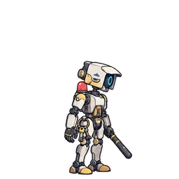
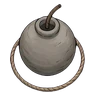
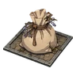
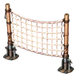
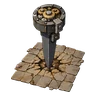
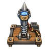

Wärterroboter
Maschine
Überblick
| HP (Grundwert) | 30 |
|---|---|
| Angriffsrate | x1 |
| Tempo | Normal |
| Bewegung | Boden |
| Verhalten | Bewacht seinen Platz |
| Wahrnehmung | 6 Felder |
| Kommt vor auf | Stufe 81 - Stufe 100 |
| Zusätzliches Gelände | Keine |
| Eigenschaften |
|
Fallen, die nicht wirken
Nur aus den Falldaten abgeleitet (Bewegungsart, ignorierte Eigenschaften und Immunität der Feindfamilie). Boss-Sonderregeln und Falllevel sind nicht berücksichtigt.
| Falle | Grund |
|---|---|
 Rauchkugel | Jede Wirkung ist eine, gegen die diese Feindfamilie immun ist |
| Wirkt nur auf bestimmte Feindfamilien oder Bewegungsarten | |
 Schlafkraut-Beutel | Jede Wirkung ist eine, gegen die diese Feindfamilie immun ist |
 Leimnetz | Kann Boden Feinde nicht treffen |
 Vibrationspfahl | Kann Boden Feinde nicht treffen |
 Störpfahl | Wirkt nur auf bestimmte Feindfamilien oder Bewegungsarten |